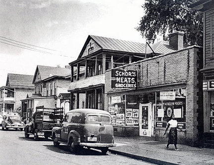
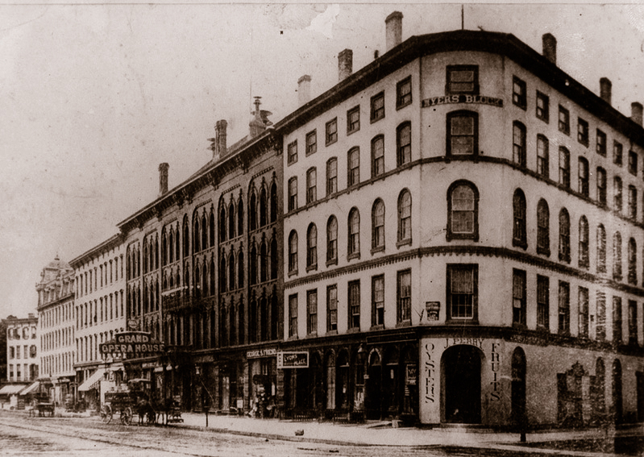
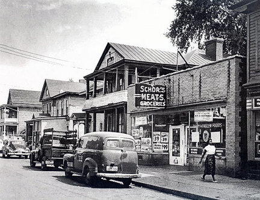
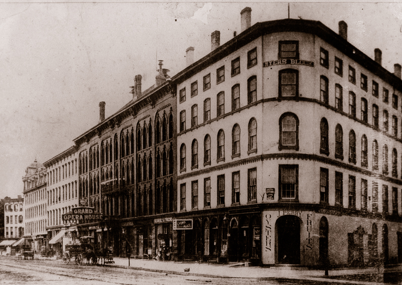

Syracuse
History of Syracuse
Ephraim Webster, the first settler, arrived Syracuse in 1786 and opened a trading post. He was followed by other settlers, who began to develop the salt resource. In 1847, Syracuse annexed the adjoining village of Salina and received a charter as a city.
When the Erie Canal was completed in 1825, low shipping rates prompted a great increase in salt production, which peaked during the Civil War at eight million bushels annually. Following the war, salt manufacturing in Syracuse declined due to increased competition from Michigan and Canada. To replace salt, Syracuse developed other manufacturing.
Syracuse University was established by the Methodist Episcopal Church in 1870 and held its first classes in rented premises in downtown Syracuse the following year. The first building on the 50-acre campus was built in 1873. At the time, the campus of Syracuse University was in farmland; now it is well within the city.
The first New York State Fair was held in Syracuse in 1841. It had no permanent home for the next half century and was held in a variety of locations, but in 1890 it moved back to Syracuse permanently. In 1849, a device very similar to the Ferris Wheel of the 1893 Columbia Exposition was put into operation at the New York State Fair in Syracuse.
 


